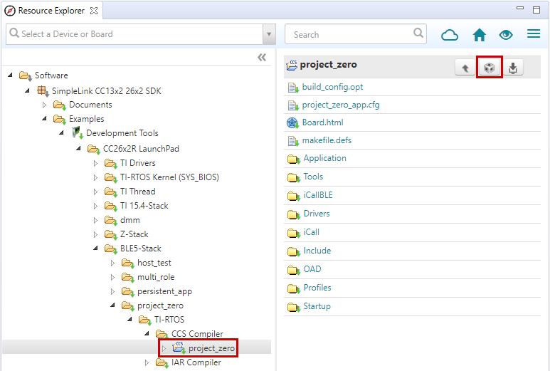
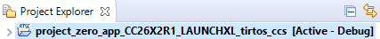
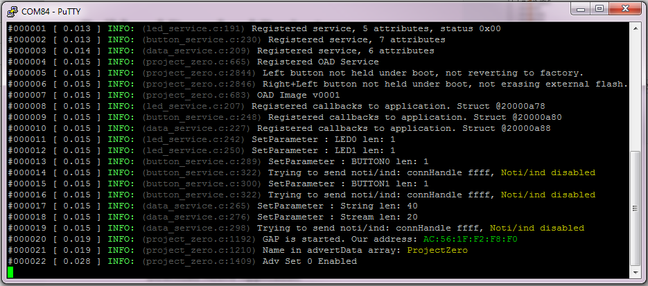
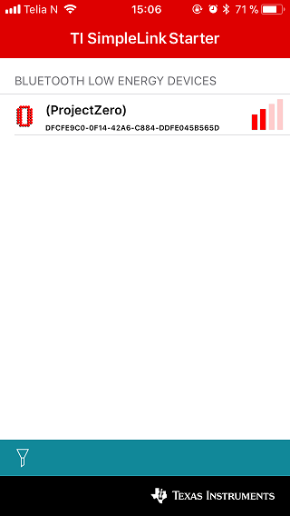
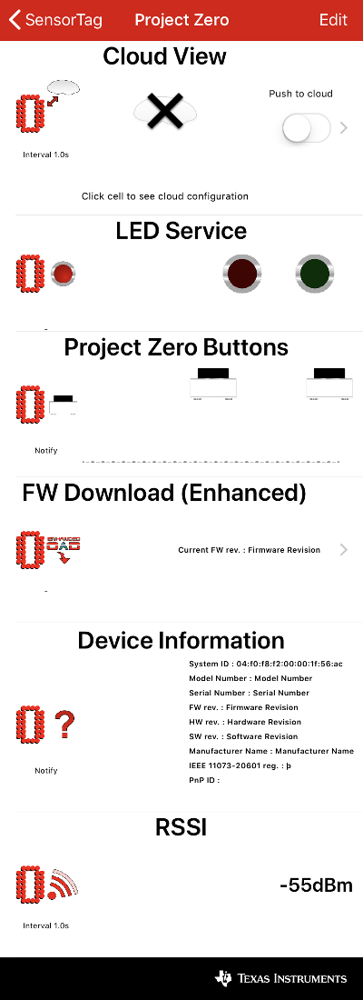
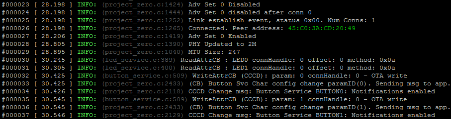
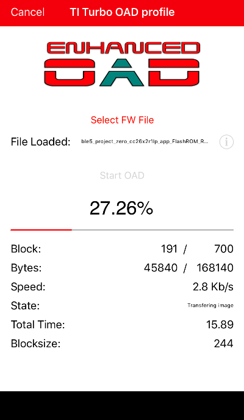
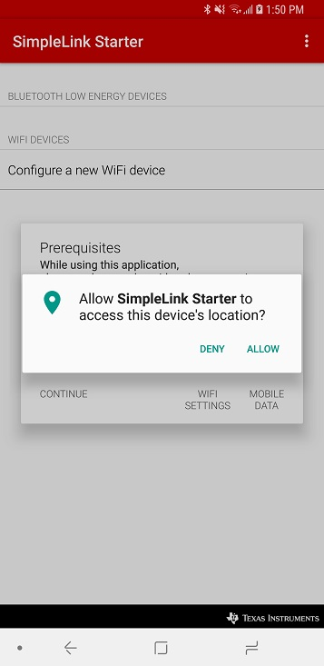
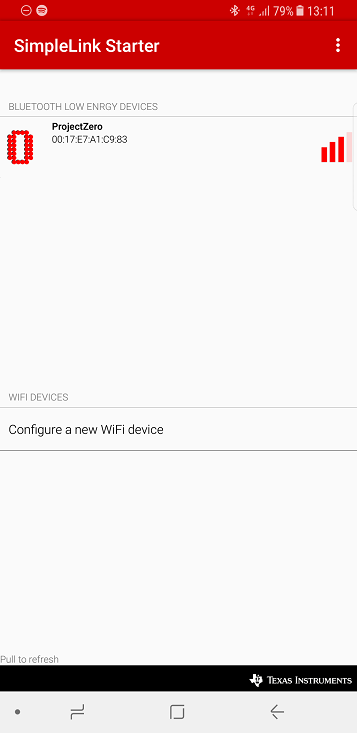
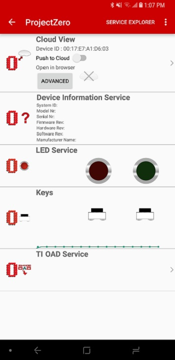

TI BLE5-Stack Quick Start¶
This section serves as a road map for users developing applications and products using the TI SimpleLink CC13xx or CC26xx wireless MCU platform for Bluetooth Low Energy applications. Whether a seasoned developer or just getting started, TI has created a variety of resources to simplify development on the CC13xx or CC26xx platform. These resources will enhance your experience with the TI SimpleLink TI BLE5-Stack 2.02.08.01 from the out-of-the-box demo to production.
To download the CC13xx or CC26xx SDK, please visit the download page: http://www.ti.com/tool/SIMPLELINK-CC13XX-CC26XX-SDK.
Figure 10. shows the suggested work flow for getting started with TI’s SimpleLink Bluetooth Low Energy (BLE) development environment.
Figure 10. Suggested Workflow¶
Note
The BLE5-Stack component of the SDK now supports secure OAD and use it by default. In order to maintain compatibility with other stacks, the Quick Start Guide will cover unsecure OAD. For more information regarding secure OAD, see the OAD Chapter of the BLE5-Stack User’s Guide.
Using BLE5-Stack Projects with CCS¶
For BLE5-Stack projects, the BLE5-Stack is linked as library files. The
host_test project is an exception to this, and use the split Stack library
configuration. This means that importing the BLE5-Stack project into CCS will
also import a BLE5-Stack library project. The stack library project is a
dependent project and will be automatically built when the example project is
built.
Projects that contain the TI Over-the-Air Download (OAD) Profile will require you to flash your device with the Boot Image Manager (BIM) hex file. This is the first step described in section Build and Download below. For more information on the TI OAD Profile and the BIM see the OAD Chapter of the BLE5-Stack User’s Guide.
For more details and how to change configurations look at the SimpleLink TI BLE5-Stack User’s Guide.
Import Project Using Resource Explorer¶
A quick and easy way to start working with the SDK is to use the TI Resource Explorer in CCS.
This section describes how to import and build an existing project and
references the project_zero project. All of TI BLE5-Stack projects included
in the development kit have a similar structure.
Open the CCS IDE from the Start Menu.
Create a workspace.
Attention
Ensure that the CCS workspace path does not contain a whitespace.
Import a CCS Project using Resource Explorer
Open Resource Explorer (if not open already): View -> Resource Explorer
Navigate to the CCS folder for your chosen example: Software → SimpleLink CC13xx/CC26xx SDK → Examples → Development Tools → CC13xx or CC26xx LaunchPad → BLE5-Stack → project_zero → TI-RTOS → CCS Compiler → project_zero
Figure 11. Import CCS Projects¶
Select the CCS Logo button to import project into Project Explorer
Attention
The import process will also install the SimpleLink CC13xx/CC26xx SDK if a local version does not exist. You must accept the End User License Agreement to proceeed.

Figure 12. Install SimpleLink CC13xx/CC26xx SDK¶
After the installation finishes, you must reopen CCS before importing the project.
If everything is successful, the project should appear in Resource Explorer: project_zero_app_CC26X2R1_LAUNCHXL_tirtos_ccs.
Figure 13. Projects Imported into CCS¶
Build and Download Project¶
Note
For projects with the stack as a library, the Stack project should always be built before the Application project.
For projects containing the TI OAD Profile, it is recommended to build the BIM first. A pre-built BIM hex file is also available, and can be used as instructed below.
To build & download Project Zero:
Flash the BIM hex file.
The hex file can be found in examples → nortos → CC13xx or CC26xx LaunchPad → bim → hexfiles → bim_offchip → Debug_unsecure
Use Smart RF Flash Programmer 2 or Uniflash to program the hex file.
Build the Application project.
Set the Application project as the active project.
Select Project -> Build All to build the Application project.
As part of the prebuild process, SysConfig will run and generate code based on the
.syscfgin the workspace. For more information on SysConfig, see the SysConfig chapter of the User’s Guide.
Load the Application project
Select Run -> Debug to download the application
Before beginning execution, open a terminal window with the following settings:
UART Param |
Default Values |
|---|---|
Baud Rate |
115200 |
Data length |
8 bits |
Parity |
None |
Stop bits |
1 bit |
Flow Control |
None |
When the debugging session opens, click the Green start button to start execution.
Continue on to the Running the Demo section for information about using
Project Zero.
Warning
When using CCS compiler, the Configuration file for BLE5-Stack is suffixed .cfg.
When using CCS compiler, modifying .xscfg files has no effect.
Using BLE5-Stack Projects with IAR¶
When building with IAR, it is recommended to enable all build messages. This can be done by right-clicking in the Build window and selecting “All” as shown below:

Figure 14. Enable All Build Messages¶
Warning
Standalone SysConfig tool must be installed in order to use all the IAR projects and
its location has to the same as specified by SYSCONFIG_ROOT.
The SysConfig standalone package can be found here: SysConfig Standalone Installer Download Page.
Import Project Using Workspace¶
This section describes how to open and build an existing project and references the project_zero project.
Warning
In this release of the SimpleLink CC13xx/CC26xx SDK all of the TI BLE5-Stack examples have been converted to the same structure as the TI Drivers examples.
This means that the global argument variables should always be used.
Custom Argvars type |
BLE5 Projects |
Keep in mind |
Common / Global |
|
Import or re-enable the global SDK argvars via Tools -> Configure Custom Argument Variables |
Per-workspace |
|
Disable the global argvars, because IAR has already imported the appropriate settings for the workspace |
Below you can see how to add and enable the SDK-global argument variables:
Figure 15. Select Configure Custom Argument Variables from the Tools menu¶
Figure 16. Click on Import… with either the Workspace or Global namespace selected. For Global, the imported values will persist for other projects also.¶
Figure 17. Find the Custom Argument Variables file under <SDK root>/tools/iar¶

Figure 18. Success! Change these paths if you have installed in a different location.¶
Some of the TI BLE5-Stack workspace included in the SimpleLink CC13xx/CC26xx SDK have an Application project and a Stack Library project. Some have only an Application project.
In addition, applications containing the TI Over-the-Air Download (OAD) Profile will also include the Boot Image Manager (BIM) project. For more information on the TI OAD Profile and the BIM see the OAD Chapter of the BLE5-Stack User’s Guide.
Note
If you have imported the global
<SDK_INSTALL_DIR>/tools/iar/SIMPLELINK_CC13XX_CC26XX_SDK.custom_argvars,
then the examples from the older SDK or CC2640R2 SDK examples will fail to build. Therefore,
you must remove this custom_argvars file from your IAR global custom arguments if you
are working on multiple version of SDKs.
Open the IAR Embedded Workbench IDE from the Start Menu.
Open an IAR workspace project: File -> Open -> Workspace…
For this example, select <SDK_INSTALL_DIR>\examples\rtos\|LP|\ble5stack\project_zero\tirtos\iar\project_zero_app.template.eww
This will prompt you to select a folder location as a workspace for the project
{kind=link}
This workspace file is for the project_zero project. When selected, the files associated with the workspace become visible in the Workspace pane on the left side of the screen. See Figure 19.
Select either project as the active project by clicking the respective tab at the bottom of the workspace pane. In Figure 19., the Overview tab is selected. This tab displays the file structure for both projects simultaneously. In this case, use the drop-down menu at the top of the workspace pane to select the active project. Each of these projects produces a separate downloadable object.
Build and Download Project¶
To build & download Project Zero:
Flash the BIM hex file.
The hex file can be found in examples → nortos → CC13xx or CC26xx LaunchPad → bim → hexfiles → bim_offchip → Debug_unsecure
Use Smart RF Flash Programmer 2 or Uniflash to program the hex file.
Build the Application project.
Select the Application project.
Select Project -> Make to build the Application project.
As part of the prebuild process, SysConfig will run and generate code based on the
.syscfgin the workspace. For more information on SysConfig, see the SysConfig chapter of the User’s Guide.
Load the Application project
To download and debug: Select Project -> Download and Debug
To download without debugging: Select Project -> Download -> Download Active Application
Refer to the Project Zero README for more information about this project.
Before beginning execution, open a terminal window with the following settings:
UART Param |
Default Values |
|---|---|
Baud Rate |
115200 |
Data length |
8 bits |
Parity |
None |
Stop bits |
1 bit |
Flow Control |
None |
When the debugging session opens, click the start button to start execution.
Continue on to the Running the Demo section for information about
using Project Zero.
Warning
When using IAR compiler, the Configuration file for BLE5-Stack is suffixed .xscfg.
When using IAR compiler, modifying .cfg file has no effect.
Running the Demo¶
After hitting the play button, your terminal window should display the Project Zero initialization information as shown below:
Figure 20. Project Zero Initialization¶
This provides information about the services present in Project Zero. Project Zero has 4 interactive services: the LED service, the button service, the data service, and the OAD service.
Writing a non-zero value to the LED service will cause the LEDs on the LaunchPad to light up. Writing zero will turn them off. Enabling notifications on the Button service will cause the Peripheral to send notifications of current button state (0 - not pressed, 1 - pressed) to the Central device. The Data service can be used to read and write multiple bytes of data. The OAD service can be used for updating the image currently running on the LaunchPad.
Choose the Central device from the list below to connect with:
Click to Expand BTool Instructions
Host Test Setup
The easiest way to connect to Project Zero with another CC13xx/CC26xx LaunchPad is by using BTool. BTool allows you to send HCI commands to the LaunchPad to easily establish BLE communication with another device.
To use BTool, you must flash your second CC13xx or CC26xx LaunchPad with the Host Test firmware from a compatible version of the TI BLE-Stack/BLE5-Stack. Pre-built Host Test binaries are included in the ble5stack examples directory of the SDK.
Uniflash can be used to program the LaunchPad with the Host Test firmware:
Figure 21. Flash Host Test using Uniflash¶
Open BTool from the tools\ble5stack\btool folder of the SDK_INSTALL_DIR.
Start BTool by double clicking Run_BTool.bat
Select the XDS110 UART COM Port for your Host Test LaunchPad:
Figure 22. BTool Serial Port Settings¶
When BTool connects to the LaunchPad, it will issue several initialization commands. If the commands succeed, you will receive multiple HCI Events with a Status of “SUCCESS”.
Connect to Project Zero
Scan for nearby advertising Bluetooth devices by selecting the Scan button in the Discovery window. Make sure your Project Zero LaunchPad is connected to power and advertising.
Compare the device addresses in the Slave BDA dropdown with the address shown in the Project Zero terminal window. Select the matching address and click “Establish” to connect to Project Zero.
Figure 23. Scanning & Connecting with BTool¶
After the connection has established, discover & read the current value of the services and characteristics available on Project Zero by right-clicking on the Handle in the Connection Info section and selecting Read Values.
Figure 24. BTool GATT Table Discovery¶
The bottom of the BTool GUI will display the Project Zero GATT Table to help you navigate and control the Project Zero services.
Figure 25. BTool GATT Table Discovery¶
Using the LED Service
Writing 0x01 to the characteristics in the LED Service will turn on the Project Zero LaunchPad LEDs. You can write to the characteristic by double clicking the Value field of the LED0 State or LED1 State characteristics.
Figure 26. Writing to a Characteristic¶
The Project Zero terminal window will update with the current LED state:
Figure 27. Turning on Project Zero LEDs¶
Using the Button Service
You can choose to receive notifications about the current state of the Project Zero Button Service by writing 01:00 to the Client Characteristic Configuration Descriptors of the Button Service. After enabling notifications, the current value of the Button state will be displayed in BTool.
Figure 28. Enabling Notifications in BTool¶
Figure 29. Pressing & Releasing Buttons¶
Using the Data Service
You can read and write multiple bytes of data by using the Data Service. Double click on the Value field of the String Char. You can write the new value directly in ASCII or you can choose a different type by selecting from the Value Type dropdown menu.
Figure 30. Writing to the Data Service¶
Figure 31. Data Service Value change¶
Using the OAD Service
Project Zero includes the TI OAD Profile which allows you to download new firmware images over-the-air. Images must be compatible with the CC13xx or CC26xx and contain the TI OAD Profile in order to be downloaded successfully. For more information on creating a new image for OAD, please see the OAD Chapter of the BLE5-Stack User’s Guide.
Note
If Project Zero was not the first image containing the TI OAD Profile you flashed on your LaunchPad Out-of-the-Box, the factory image in your external flash may not be Project Zero. This could mean that you will be unable to return to Project Zero by using the factory reset option after performing an OAD and will have to use the debugger to load a new image.
Refer to the Project Zero README for more information about this project and resetting the factory image contained in external flash.
In BTool, choose Over The Air Download in the “Select Device Operation” box. In this demo, we will use Project Zero as our example since a valid image was created during the build process.
Select the new image to load on your CC13xx or CC26xx LaunchPad by clicking Read Image
File. Navigate to your Project Zero build output directory. Select the
*_oad.bin file. The *_oad.bin file will contain a valid image header.
BTool will send a connection parameter update at the beginning of an OAD to attempt a faster download. The embedded application will also attempt a parameter update (if enabled). It is recommended to wait until the application’s connection parameter update has taken place before starting an OAD. If you are experiencing a slow OAD, this may be the cause. The parameter update is complete once the following message is shown in the BTool log:
--------------------------------------------------------------------
[7] : <Rx> - 04:16:04.518
-Type : 0x04 (Event)
-EventCode : 0x00FF (HCI_LE_ExtEvent)
-Data Length : 0x0B (11) bytes(s)
Event : 0x0607 (1543) (GAP_LinkParamUpdate)
Status : 0x00 (0) (SUCCESS)
ConnHandle : 0x0000 (0)
ConnInterval : 0x0024 (36)
ConnLatency : 0x0000 (0)
ConnTimeout : 0x00C8 (200)
Dump(Rx):
0000:04 FF 0B 07 06 00 00 00 24 00 00 00 C8 00 ........$.....
--------------------------------------------------------------------
Figure 32. Updating Firmware Image with BTool¶
Once you are sure this is the image you want to run, click Send to begin the OAD process.
The Status bar will provide information on the current status of the download. If the download completes successfully, you will receive a “OAD Download Successful” message in BTool.
Note
After an OAD has completed, you may need to manually hit the reset button on the CC13xx or CC26xx LaunchPad in order to trigger a full reset and jump to BIM. This step is only required after first programming the device.
This will disconnect the debugger and terminate the debugging section.
Click to Expand iOS Instructions
Download the latest version of the TI SimpleLink Starter app from the iOS app store. When the download completes, open the app:
Figure 33. SimpleLink Starter App¶
Connect to Project Zero
When the app opens, nearby Bluetooth Low Energy devices will appear. You should see ProjectZero advertising as shown below:
Figure 34. Project Zero Advertising¶
Press the Project Zero item and select Sensor View. The services present in Project Zero will appear as shown below:
Figure 35. Project Zero Advertising¶
The Project Zero terminal information will also update with connection information including the peer device address, PHY, and MTU Size. For more information about these parameters, see the BLE5-Stack User’s Guide.
Figure 36. Project Zero After Connection¶
Using the LED Service
To turn on an LED, press one of the buttons on the LED service. The left button turns on the Red LED (DIO6). The right button turns on the Green LED (DIO7). Pressing the button again will turn the LED off. The Project Zero terminal window will update with the current LED state.
Using the Button Service
Button press notifications are automatically enabled when connecting through the Sensor View. If you press and release either button, the Sensor View will update with the current state and the button state graph will show the button state over time (High corresponds to button pressed, low corresponds with button released).
Using the Data Service
The Data Service is not displayed in Sensor View. To use the Data Service, close the Sensor View by pressing the < Sensor Tag button in the upper left. This returns you to the main SensorTag view. Press the ProjectZero icon again and now select Service Explorer. The Data Service is the service with the UUID that begins with F0001130 (List Item 3). Press the item and you will see two characteristics. The first characteristic can be used to read and write multiple bytes of data. You can do this by pressing Read characteristic to get data from ProjectZero and Write w/response characteristic to send multiple bytes of data to ProjectZero.
Using the OAD Service
Return to the Sensor View by returning to the main SensorTag view and reconnecting to Project Zero using the Sensor View. Select FW Download (Enhanced) to use the TI OAD Profile to download a new image to your LaunchPad Over-the-Air.
Note
If Project Zero was not the first image containing the TI OAD Profile you flashed on your LaunchPad Out-of-the-Box, the factory image in your external flash may not be Project Zero. This could mean that you will be unable to return to Project Zero by using the factory reset option after performing an OAD and will have to use the debugger to load a new image.
Refer to the Project Zero README for more information about this project and resetting the factory image contained in external flash.
Select a new image to load on your CC13xx or CC26xx LaunchPad by pressing Select FW File.
This will display a selection of available firmware images. To select a new
BLE5-Stack image, choose either Project Zero or Simple BLE Peripheral, then
select Start OAD. To select a new image for a different wireless technology,
choose the firmware image of choice, select Start OAD and skip to the
applicable Running the Demo section of the Quick Start Guide.
After selecting Start OAD, the SimpleLink Starter app will display download
progress:
Figure 43. Performing an OAD¶
Note
After an OAD has completed, you may need to manually hit the reset button on the CC13xx or CC26xx LaunchPad in order to trigger a full reset and jump to BIM This step is only required after first programming the device.
This will disconnect the debugger and terminate the debugging section.
Click to Expand Android Instructions
Download the latest version of the TI SimpleLink Starter app from your app store. When the download completes, open the app:
Figure 44. SimpleLink Starter App¶
Enable location permissions to allow the app to function properly:
Figure 45. SimpleLink Starter Location Permissions¶
Connect to Project Zero
Open the SimpleLink Starter app on your device. The app should begin scanning for BLE devices automatically but you can force a refresh by pulling down on the device list. Make sure your Project Zero LaunchPad is nearby and advertising. Project Zero should appear in the Bluetooth low energy devices list:
Figure 46. Discovering Project Zero¶
Establish a connection to the Project Zero by clicking on its name in the devices list. The SimpleLink Starter application will display the Project Zero services and displays GUI widgets to interact.
Figure 47. Project Zero Services¶
Using the LED Service
To turn on an LED, press one of the buttons on the LED service. The left button turns on the Red LED (DIO6). The right button turns on the Green LED (DIO7). Pressing the button again will turn the LED off. The Project Zero terminal window will update with the current LED state.
Using the Button Service
Button press notifications are automatically enabled when connecting through the Sensor View. If you press and release either button, the Sensor View will update with the current state and the button state graph will show the button state over time (High corresponds to button pressed, low corresponds with button released).
Using the Data Service
The Data Service is not displayed in Sensor View. To use the Data Service, you will need to switch to the Service Explorer view. Tap Service Explorer in the top right of the screen to switch views. The Data Service is the service with the UUID that begins with F0001130 (Project Zero Stream Service). Tap the item and you will see two characteristics. The first characteristic can be used to read and write multiple bytes of data. You can do this by pressing Read characteristic to get data from ProjectZero and Write w/response characteristic to send multiple bytes of data to ProjectZero.
Using the OAD Service
Return to the Sensor View by returning to the main SensorTag view and reconnecting to Project Zero using the Sensor View. Select FW Download (Enhanced) to use the TI OAD Profile to download a new image to your LaunchPad Over-the-Air.
Note
If Project Zero was not the first image containing the TI OAD Profile you flashed on your LaunchPad Out-of-the-Box, the factory image in your external flash may not be Project Zero. This could mean that you will be unable to return to Project Zero by using the factory reset option after performing an OAD and will have to use the debugger to load a new image.
Refer to the Project Zero README for more information about this project and resetting the factory image contained in external flash.
Select a new image to load on your CC13xx or CC26xx LaunchPad by pressing Select FW File.
This will display a selection of available firmware images. To select a new
BLE5-Stack image, choose either Project Zero or Simple BLE Peripheral, then
select Start OAD. To select a new image for a different wireless technology,
choose the firmware image of choice, select Start OAD and skip to the
applicable Running the Demo section of the Quick Start Guide.
After selecting Start OAD, the SimpleLink Starter app will display download
progress:
Figure 54. Performing an OAD¶
Note
After an OAD has completed, you may need to manually hit the reset button on the CC13xx or CC26xx LaunchPad in order to trigger a full reset and jump to BIM This step is only required after first programming the device.
This will disconnect the debugger and terminate the debugging section.
Learning More About TI BLE5-Stack¶
Resources contained in the Learn track of Figure 10. are intended for users who are new to BLE or TI-RTOS. These modules demonstrate how to create custom applications with TI BLE5-Stack and TI’s Real Time Operation System (TI-RTOS).
SimpleLink Academy: TI Resource Explorer
SimpleLink Academy provides a comprehensive set of training tools that allow users from beginners to experienced developers to learn about the SimpleLink MCU Platform.
Using introductory material and labs, learn the fundamentals of BLE and how to develop a custom BLE profile.
SimpleLink Academy also contains modules written to demonstrate the rich debug environment and peripheral driver capability provided by TI-RTOS.
TI-RTOS Kernel Workshop www.training.ti.com/ti-rtos-kernel-workshop
This material teaches users who are new to TI-RTOS or any RTOS programming in general about TI’s RTOS kernel implementation.
Modules within the kernel training greatly expand the information presented in the TI-RTOS Overview chapter in the TI BLE5-Stack User’s Guide.
Learn how the TI-RTOS provides the most optimal power management and design flexibly.
Developing a New BLE5-Stack Based Application¶
The develop track of Figure 10. is intended for programmers who are ready to start developing an end product using the CC13xx or CC26xx. To begin:
Get Familiar with the BLE5-Stack User’s Guide
This User’s Guide is meant to be used alongside the TI BLE5-Stack when developing an end product. It contains documentation on the stack architecture, APIs, and suggestions for developing applications.
Select an Example Project
The TI BLE5-Stack includes a basic set of projects to use as a starting point for development of your custom application. Click the links below to find out more information about each project:
Name |
Description |
A network processor project that is interfaced with HCI and Vendor Specific HCI commands. |
|
Provides the ability to operate function in multiple simultaneous connection roles. |
|
Feature rich peripheral application that provides LED and button functionality OOB. |
|
A project implements a simple Bluetooth Low Energy central device with GATT client and angle of arrival (AoA) functionality. |
|
A project implements a simple Bluetooth Low Energy peripheral device with GATT server and sends out special angle of arrival packets to enable real time locationinig. |
|
rtls_passive is a combination of Connection Monitor (CM) and RTLS examples. It uses the connection monitor to monitor a BLE connection, receive AoA packets and measure RSSI. |
|
Demonstrates a simple Bluetooth Low Energy broadcaster application that implements non-connectable advertisements. |
|
Implements a basic BLE central device with GATT client functionality. |
|
Demonstrates a simple Bluetooth Low Energy slave application that implements connectable advertisements and a simple profile. |
|
Same as simple_peripheral above with off-chip OAD functionality to enable wireless firmware updates. |
|
Same as simple_peripheral above with on-chip OAD functionalityto enable wireless firmware updates. |
Troubleshooting Help
While developing your custom application, you may run into issues that require the use of a debugger. See the Debugging chapter in the TI BLE5-Stack User’s Guide for guidance.
Developing a New BLE Mesh Application¶
Get Familiar with the Bluetooth Mesh Section of the BLE5-Stack User’s Guide
Take a look at the TI Bluetooth Mesh Quick Start Guide for an overivew of our Bluetooth Mesh Application. It contains documentation on the implementation architecture, APIs, and suggestions for developing applications.
As Bluetooth Mesh builds on top of Bluetooth Low Energy v4.2, our BLE5-Stack User’s Guide should also be referenced when developing an end product.
Select an Example Project
The TI BLE5-Stack includes a basic set of projects to use as a starting point for development of your custom application. Click the links below to find out more information about each project:
Name |
Description |
Implements a basic BLE mesh node with Relay, Proxy, Friend, and Low Power Node capabilities using GATT/ADV bearer |
|
Same as simple_mesh_node above with off-chip OAD functionality to enable wireless firmware updates. |
|
Same as simple_mesh_node above with on-chip OAD functionality to enable wireless firmware updates. |
|
A Python based network processor project that interfaces with a simple_mesh_node |
Troubleshooting Help
While developing your custom application, you may run into issues that require the use of a debugger. See the Debugging chapter in the TI BLE5-Stack User’s Guide for guidance.
Enhance Your Project¶
The enhance track of Figure 10. is intended to take your product to the next level by leveraging TI’s web-based collateral. Additional resources found in these pages include application-specific source code examples, smart phone source code, and complete sub-system designs.
TI SimpleLink GitHub TI SimpleLink GitHub
Additional sample applications created to implement specific use cases and examples. These are made to work in conjunction with the SDK.
TI Designs™ http://www.ti.com/tidesigns
Examples of system designs containing complete hardware and software examples, using the CC13xx or CC26xx.
Bluetooth Qualification¶
Texas Instruments experts have written the How to Certify Your Bluetooth Product guide to assist you through this process.
Getting Support¶
The support track of Figure 10. is intended to provide you additional help and resources that aren’t contained in the previous tracks
E2E Forums www.ti.com/ble-forum
A support community providing answers to questions relating to the 2.02.08.01 and the CC13xx or CC26xx. You can browse questions from other developers or ask your own questions if you run into issues developing with 2.02.08.01.